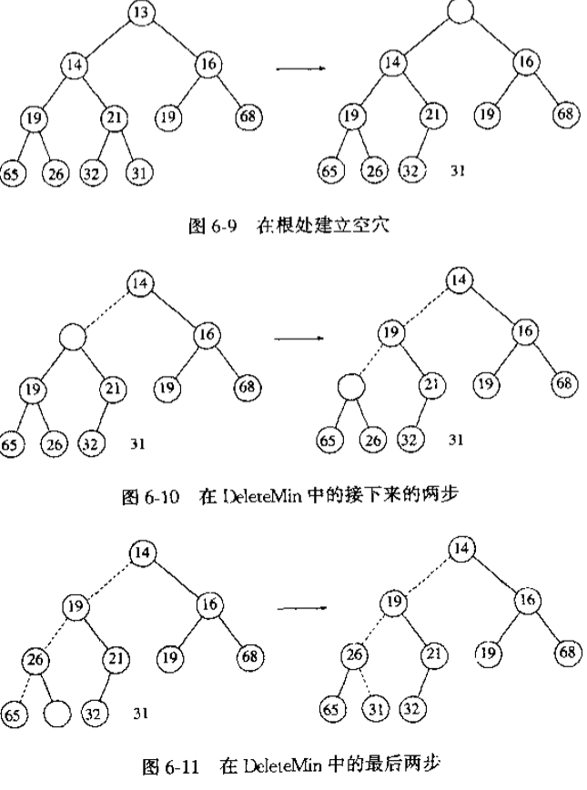

一、算法分析
在分析算法时，相对增长率 是最重要的度量。当T(N) = O(f(N)) 时，说明函数T(N)是在以不快于f(N)的速度增长，因此f(N)是T(N)的一个 上界(upper bound)；当T(N) = Ω(f(N))时，说明函数T(N)是在以不慢于f(N)的速度增长，因此f(N)是T(N)的一个 下界(lower bound)。
结论：如果 $ T_1 = O(f(N)) $ 且 $ T_2 = O(g(N)) $，那么有(a)：$ T_1(N) + T_2(N) = max(O(f(N)), O(g(N))) $，(b)：$ T_1(N) T_2(N) = O(f(N) g(N)) $；对任意常数k，$ log^kN = O(N) $，说明对数增长的很慢。
PS：将 常数或低阶项 放进大O是非常坏的习惯。不要写成 $ T(N) = O(2N^2) $ 或 $ T(N) = O(N^2 + N) $，在这两种情形下，正确的形式是 $ T(N) = O(N^2) $。在需要大O表示的任何分析中，各种简化都是可能发生的，低阶项一般可以被忽略，而常数也可以弃掉，此时要求的精度是很低的。
一个好的算法，运行时间一般按秒来计算，一个需要运行长达一年时间或需要1G字节内存的算法几乎是没用的。对于Time = O(f(N)) 来说，如果值Time几乎不会随着输入N的快速增长而发生变化的算法，可以定义为一个好的算法。
分析算法最混乱的方面大概集中在对数上面。某些分治算法将以O(NlogN)时间运行，除分治(divide-and-conquer)算法外，可将对数最常出现的规律概况为下列一般法则：如果一个算法用常数时间将问题的大小削减为 其一部分(通常是1/2)，那么该算法就是O(log N)。如果使用常数时间只是把问题减少 一个常数(如将问题减少1)，那么这种算法就是O(N)的。
二、表、栈和队列
2.1 表(List)
如果使用 简单数组(array) 实现表，那么Find操作就很快，然而Insert和Delete操作的花费是昂贵的，改变数组大小操作会移动整个数组。Java中的ArrayList类就是使用数组实现的。
如果使用 链表(linked list) 实现，那么刚好相反，Find操作会遍历整个表，而Insert和Delete操作只需把对应元素的指针改变即可。在解决表是否是空的base case时，单链表使用设置一个标志节点 表头(header) 的方式，或者使用 双链表(doubly linked list) 。Java中的LinkedList类就是使用双链表来实现的。
2.2 栈(Stack)
栈也叫做 LIFO(后进先出表)，它是限制插入和删除只能在 栈顶(top) 上进行的表，基本操作有 push(入栈) 和 pop(出栈)。
由于栈是一个表，因此任何实现表的方法都能实现栈。因为栈顶的操作都是在表的末尾来操作的，故 使用数组的整体开销要比使用链表的开销要小的多，避免了指针。使用数组实现栈的一个问题是需要提前声明一个数组的大小，一般来说，这并不是个问题，在典型的应用程序中，即使有相当多的栈操作，在任一时刻栈元素的实际个数从变化太大。声明一个数组足够大而不至于浪费太多的空间通常并没有说明困难，如果不能做到这一点，那么节省的做法是使用链表来实现。
栈的应用：
- 因为许多语言中的符号都是成对出现的，编译器检查程序的语法错误时，无需为此编写一个大型程序，这个简单的算法只需用到一个栈：做一个空栈，在读入符号时，如果字符是一个开放符号，则入栈。如果字符是一个封闭符号，则当栈空时报错，否则出栈，如果弹出的符号不是对应的开放符号，则报错。读入结束时，栈非空则报错。这个算法是线性(on-line)的，它只需对输入进行一趟检验。
- 利用 后缀(postfix)表达式 进行科学计算。在数学运算中符号有优先级，为了避免使用简单计算器需要记住中间结果，最容易的办法是使用一个栈。首先把表达式转换为后缀表达式，当遇到一个数时就把它入栈，在遇到一个运算符时，该运算符就作用于从该栈弹出的两个数上，将所得结果推入栈中。
- 将标准形式的表达式(中缀式(infix))转换为后缀式时也可以使用栈。这次是把操作符放入栈中，而把数字直接放在输出列中。如果当前操作符的优先级比栈顶操作符优先级高时，则入栈，否则弹出栈顶元素放入输出列中，再入栈。如果遇到右括号，就将栈元素弹出，直到遇到一个对应的左括号，但这个左括号只被弹出，并不输出。最后读入输入到结尾时，就将栈元素弹出直到该栈变成空栈，将操作符写到输出中。
- 函数调用和抛出异常时，也是使用的栈。
2.3 队列(Queue)
队列也是表。只能在队尾(rear)插入元素，称为 入队(Enqueue)，在队头(front)删除元素，称为 出队(Dequeue)。
和栈是一样的，可以用数组和链表来实现队列。
队列一般来解决计算用户排队预计等待时间、等待服务的队列能够排多长等问题。
三、Tree - 树
对于大量的输入数据，表的线性访问时间太慢了，而对于树这种数据结构，其大部分操作的运行时间平均为O(log N)。
树中节点除了包含其实际内容外，还有指向其他节点的指针，故树一般用链表来实现。常见的UNIX、DOS系统中的文件目录系统都是使用树来实现的，一般使用 先序遍历(preorder traversal) 来输出打印目录结构，也可以使用中序(inorder)遍历和后序(postorder)遍历来显示。
3.1 二叉树(binary tree)
树中每个节点最多有两个子节点，就称为二叉树。其实现和双链表很相似，一个节点是由 Key(关键字) 信息和两个指向其他节点的指针 (Left和Right) 组成的结构。它主要用处是在 编译器 的设计领域。
3.2 二叉查找树(binary search tree)
二叉树的一个重要应用是在查找中应用，在二叉树的基础上，使 每个节点X，它的左子树中所有 Key值都小于 X值，而它的右子树中所有 Key值都大于 X值，就成为了二叉查找树。这意味着二叉查找树中所有的元素都呈 排序 的状态。
二叉查找树的平均深度是O(log N)，所以一般不必担心栈空间被用尽。
其Find操作的时间复杂度和对分查找是一样的，都是O(log N)。Insert和Delete操作都是需要先找到操作数对应的插入或删除位置，然后改变对应节点的指针即可。
3.3 平衡二叉树(balance binary tree)
如果二叉查找树总是选择左子树的最小节点或右子树的最大节点来进行大量连续的 Insert 或 Delete 操作时，就会出现整棵树的左子树和右子树深度很不平衡的现象，即看起来整棵树是倾斜的，对于任意单个运算将不再保证O(log N)的时间界，可以证明任意连续M次操作在最坏情形下花费时间为O(MlogN)，而平衡二叉树就是带有平衡条件的二叉树。
这个平衡条件除了保证树的深度足够小，又要保证平衡关系容易保持，故平衡二叉树是 每个节点 的左子树和右子树的高度 最多差1 的二叉查找树。
每当发生一次Insert或Delete操作时，就会破坏平衡条件，需要通过称为 旋转(rotation) 的行为对树进行简单的修正。这里以插入为例，把必须重新平衡的节点叫做α，当发生一次插入时，α点的两颗子树的高度就相差2。这种不平衡可能出现在下面四种情况下：
- 对α的左儿子的左子树进行一次插入；
- 对α的左儿子的右子树进行一次插入；
- 对α的右儿子的左子树进行一次插入；
- 对α的右儿子的右子树进行一次插入；
1和4是关于α点的镜像对称，这样的插入发生在 外边 的情况(即左-左 或 右-右)，通过对树的一次 单旋转(single rotation) 完成调整。2和3是关于α点的镜像对称，这样的插入发生在 内部 的情况(即左-右 或 右-左)，通过稍微复杂的 双旋转(double rotation) 完成调整。
3.3.1 单旋转

针对外边情形，对于不平衡的节点k2，通过指针改变，用其高度高的子节点k1代替k2位置，而k2作为k1的右节点，原本属于k1的右节点Y作为k2的左节点。
抽象的形容就是：把树形象地看成是柔软灵活的，抓住节点k1，使劲摇动它，在重力作用下，k1就变成了新的根。

3.3.2 双旋转

针对内部情形，唯一的选择是把k2用做新的根，迫使k1成为k2的左节点，k3成为k2的右节点，从而完全确定了这四棵树的最终位置。

3.3.3 程序实现
一共有元素内容、左右节点、高度四个字段，高度用来表明树是否不平衡，需要进行旋转，通过比较元素内容大小来确定单旋转合适双旋转。
由于平衡二叉树是带有平衡条件的二叉搜索树，故其平均深度要更小，自然Find操作就更快一点，当然为了维护这个平衡关系，Insert和Delete操作花费的时间就更长点。
3.4 红黑树(red black tree)
红黑树也是一种自平衡二叉查找树，它虽然是复杂的，但可以在最坏情形下花费O(log N)时间进行查找，插入和删除，并且在实践中是高效的。典型的用途是实现关联数组。
红黑树的每个节点是红色或黑色，根是黑色的。主要定义有：
- 一个节点是红色的，其子节点必须是黑色的(也就是说不存在两个连续的红色)；
- 从任一节点到叶节点的所有路径都包含相同数目的黑色节点。如果在插入一个新节点时，把它变为黑色的，就会违反这个规则，导致建立更长的黑节点路径，故 新插入的节点必须是红色的
一般刚插入一个红色新节点完成后，发现不满足红黑树定义，一般都是出现了连续的红色节点，就需要调整树，基本操作是改变颜色和树的旋转。
假设X是新插入节点，P是它的父节点，S为该父节点的兄弟，G为祖父节点。
case1: 如果新插入节点的父节点是黑色，不违反任何规则，插入完成；
case2: 父节点P是红色，父兄弟S为黑色，且为外边插入，就执行一次单旋转，并交换P和G的颜色；
case3: 父节点p是红色，父兄弟S为黑色，且为内边插入，执行一次双旋转，并交换X和G的颜色；
case4: 父节点P和父兄弟节点S都是红色，那么使祖父节点G颜色由黑色变为红色，P和S由红色都变为黑色。如果这样执行完后发现，祖父节点G的父节点也是红，这种翻转颜色就会打破红黑规则，因为这时祖父节点G的兄弟节点一定是黑色的，那么只需再执行一次单旋转或双旋转即可。
经验指出，平均红黑树大约和平衡二叉树一样深，从而查找时间一般接近最优。它的优点是执行插入所需要的开销相对较低，实践中发生的旋转相对较少。
3.5 B-tree
我们很熟悉的就是，B-Tree 用于数据库管理系统(DBMS)的 Index索引 中，树被存储在磁盘中而不是内存中。
阶为M的B-Tree的定义：
- 树的根要么就是一片树叶，要么其子节点数在2和M之间；
- 除根外，所以非树叶节点的子节点数在 $ \left \lceil M/2 \right \rceil $ 和 M 之间；
- 所有的树叶都在相同的深度上，所有的数据都存储在树叶上；
- 对于每个节点，其左子树中所有的关键字都小于右子树的关键字。

B-Tree在不断插入节点的过程中，总会出现节点数满了的时候，可以通过 分裂节点 或 增加高度 的方式来处理。
它Find操作的时间复杂度是 $ O(log_M N) $。B-Tree 可以理解为 M叉查找数，其结构介于二叉查找树和一个排序的数组之间。对于存放的大量排序的数据，B-Tree就更合适，因为二叉查找树的深度会很深，而数组会很长。
四、Hash - 散列
散列是通过散列函数以常数平均时间执行插入、删除和查找的数据结构，它不能用来执行 FindMin、FindMax以及排序等操作。
理想的散列表是一个包含关键字的具有固定大小的数组，表大小记为 Table-Size，每个关键字被映射到从 0 到 Table-Size - 1 这个范围中的某个数，这个映射就叫做 散列函数(hash function)。理想情况下它应该运算简单并应该保证任何两个不同的关键字映射到不同的单元，不过表大小是有限的，而关键字实际上用不完。因此一个好的散列函数要在单元之间均匀地分配关键字。
4.1 散列函数
选择一个好的散列函数是至关重要的。通常关键字是字符串。
- 简单的想法是：通常保持表的大小是素数，把字符串中字符的 ASCII 码值加起来，直接返回模(Key mod TableSize)的结果。不过这个函数不能很好的分配关键字。
- 另一种较好的函数：先计算key值，
$ \sum_{i=0}^{KeySize-1}Key[i]·27^i $，最后除模。在实际结果中，只有表的28%被真正散列到。 - 一个好的散列函数：先计算key值，
$ \sum_{i=0}^{KeySize-1}Key[KeySize-1-i]·32^i $，最后除模。之所以用32代替27，是因为用32作乘法不是真的去乘，而是按位向左移二进制的5位。
当然上面的散列函数就表的分布而言未必是最好的，但是确实具有极其简单的优点。在实际生产环境中，严格复杂的使用MD5或SHA1，简单的使用CRC32。
4.2 解决冲突
不论是简单的还是复杂的散列函数，当关键字量很大的时候，就会出现两个关键字hash到同一位置的时候(散列值相同)，称为 冲突(Collision)。解决冲突有两种方案是 分离链接法 和 开放地址法。
散列表的 装填因子(Load Factor) γ = KeyNumr / TableSize，即元素个数与散列表大小的比值。γ值越大，冲突就越多，故选择一个合适的loadFactor值是很重要的。
4.2.1 分离链接法(Separate Chaining)
其做法是将散列到同一个值的所有元素保留到一个List中，这样就存在两种数据结构了，执行一次查找所需要的工作是计算散列函数值所需要的常数时间加上遍历list所用的时间。
Java中的HashMap类就是使用的这种方法来解决冲突的。装填因子一般默认为0.75。
4.2.2 开放地址法(Open Addressing)
分离链接算法的缺点是需要指针，由于给新单元分配地址需要时间，这导致算法的速度有些减慢。在开放地址算法中发生了冲突，就会尝试选择另外的单元，直到找出空的单元为止。其中$ h_i (X) = (Hash(X) + F(i)) mod TableSize $，函数F是冲突解决方法，i表示每个关键字出现冲突的次数。
因为所有的数据都要放在表内，所以开放地址法所需要的表要比分离链接法用的表大，其装填因子应该低于0.5。
- 线性探测法。
F(i) = i，这相当于逐个探测每个单元以查找出一个空单元。这个解决冲突算法会造成 一次聚集 的问题。 - 平方探测法。$ F(i) = i^2 $，它会造成 二次聚集 的问题。
- 双散列。$ F(i) = i·hash_2(X) $，一般 $ hash_2(X) = R - (X mod R) $ 这样的函数会起到良好的作用，其中R为小于TableSize的素数。
4.3 再散列(rehash)
如果表中元素填的太满，即使把冲突解决了，Find 或 Insert 操作的运行时间也会花费很长的时间，因为可能每次操作都需要解决冲突，即随着装填因子的增加表的性能会下降很多。好的解决方案就是 当表到达某一个装填因子时，表大小翻倍，对原表中元素在新表中进行再散列。
4.4 应用
- 编译器中的符号表(symbol table)，就是使用散列表来跟踪源代码中声明的变量。
- 游戏编制程序中的变换表(transposition table)。
- 在线拼写检测。如果错误检测比纠正错误更重要，那么整个词典可以被预先散列，单词则可以在常数时间内被检测。
五、Priority Queue - 优先队列
优先队列主要有两种操作：Insert和DeleteMin，它的工作是找出、返回和删除优先队列中最小最优先的元素。这里我们定义最小元为最优先元素。
5.1 一些简单实现
- 使用简单链表在表头以O(1)执行插入操作，以O(N)时间遍历该链表删除最小元；
- 始终使表保持排序状态，这使得插入代价高昂为O(N)，而DeleteMin花费低廉O(1)；
- 使用二叉查找树，它是排序状态，可以始终找到并删除最小元，它对Insert和DeleteMin两种操作的平均运行时间都是O(log N)。
基于 DeleteMin 的操作次数从不多于 Insert 操作次数的事实，故方案1比方案2更好一点。由于二叉查找树支持许多优先队列不需要的操作，并且反复删除左子树的节点会使树不平衡，而使用平衡树的代价会更高，故使用查找树有点不太合适。
5.2 二叉堆(binary heap)
它的使用对于优先队列的实现是如此的普遍，以至于当 堆 这个词不加修饰的使用时，一般都是指该数据结构。二叉堆也叫做堆。
堆有 结构性 和 堆序性 两个性质。结构性指堆是一颗被完全填满的二叉树，元素从左到右依次填入，故堆可以用一个数组实现而不需要指针。堆序性指如果我们想要快速地找出最小元，那么任意节点应该小于它的所有子节点。意味着整个树的最小元在根上。
Insert插入操作：如果需要在插入时就维护堆序性，则可以用称为 上滤(percolate up) 的策略。
DeleteMin删除最小元：如果只需在删除时维护堆序性，则可以用称为 下滤(percolate down) 的策略。

六、Sort - 排序
对于大多数排序，一般都能在内存中完成，元素的个数相对来说比较小(小于 $ 10^6 $ )，不能在内存中完成而在磁盘中完成的排序称为外部排序。各种排序算法的时间复杂度在 O(N logN) ~ O(N^2)。
6.1 插入排序(insertion Sort)
插入排序由 N - 1 趟排序组成，它保证从位置0到位置P上的元素为已排序状态，在第P趟时，位置P上的元素存于 Tmp，而在位置P之前所有更大的元素都被向右移动一个位置，然后 Tmp 被置于正确的位置上。

很显然插入排序的时间复杂度是 O(N^2)。有定理：通过交换swap相邻元素进行排序的任何算法平均需要 Ω(N^2) 时间。它同样适用于冒泡排序和插入排序。
6.2 冒泡排序(Bubble Sort)
原理：从开始第一对到结尾最后一对，比较相邻元素，如果第一个比第二个大就彼此交换。这样在第一趟冒泡后，最大元素被冒泡到了最后的元素。针对所有元素重复以上的步骤，除了最后一个，以此类推。

6.3 选择排序(Select Sort)
原理：每进行一趟，比较并选择最小元素，然后和首位元素进行交换，以此类推。
选择排序和冒泡排序都是在一趟过后得到了最大或最小值，区别是选择排序只进行最后一次的交换位置，而冒泡排序在过程中置于发现顺序不一致就进行位置的交换。
6.4 希尔排序(Shell Sort)
它是通过比较相距一定间隔的元素来工作，各趟比较所用的距离随着算法的进行而减少，直到比较相邻元素的最后一趟排序为止，希尔排序也叫做 缩小增量排序(diminishing increment sort)。希尔排序使用一个 增量序列(increment sequence) h_1，h_2，···，h_t。在使用增量h_k的一趟排序后，对于每一个i都有A[i]<=A[i+h_k]，所有相隔h_k的元素都被排序。
当使用了希尔排序后，选择一个合适的增量序列是很重要的，即使是一个小的改变都可能剧烈地影响着算法的性能。增量序列的一种流行的选择是使用Shell建议的序列: $ h_t = \left \lfloor N/2 \right \rfloor $ 和 $ h_k = \left \lfloor h_k_+1/2 \right \rfloor $ 。
该程序实现和插入实现方法中相同的方式避免明显地使用交换。
经验研究指出，Sedgewick提出了几种好的增量序列，其最坏情形运行时间为 O( $ N^4^/^3 $ )，其中最好的序列是{1,5,19,41,109,…}，该序列中项或者是 9·4^i - 9·2^i + 1，或者是 4^i - 3·2^i + 1，这个增量在实践中还是最为人们称道的。
6.5 堆排序(Heap Sort)
优先队列可以用于花费 O(NlogN) 时间的排序，它称为堆排序，通过每次DeleteMin操作把最小元素弹出来，执行N次后就得到了N个元素的排序。
6.6 归并排序(Merge Sort)
归并排序使用经典的 分治(divide-and-conquer) 策略，将问题分成一些小的问题然后递归求解，而治的阶段则将分的阶段解的各个答案合并到一起。
这个算法中的基本操作是合并两个已排序的表，因为这两个表是已排序的，所以若将输出放到第三个表中时，则该算法可以通过对输入数据一趟排序来完成。基本的合并算法是取两个输入数组A和B，一个输出数组C，以及三个计数器Aptr，Bptr，Cptr，它们初始置于对应数组的开始端。A[Aptr]和B[Bptr]中较小者被拷贝到C中的下一个位置，相关的计数器向前推进一步。当两个输入表有一个用完的时候，则将另一个表中剩余部分拷贝到C中。
虽然归并排序的运行时间是 O(NlogN)，但它很难用于内存排序，主要问题在于合并两个排序的表需要 线性附加内存，在整个算法中还要花费 将数据copy到临时数组再copy回来 这样一些附加工作，其结果严重放慢了排序的速度。
应用：数据库系统DBMS中的大数据排序就使用了 MergeSort。先把大数据分为几组小数据，对小数据在内存中使用快排后，然后在磁盘中对所有的分组数据使用归并排序。
6.7 快速排序(Quick Sort)
快速排序是在实践中最快的已知排序算法，它的平均运行时间是O(NlogN)，该算法之所以特别快，主要是由于非常精炼和高度优化的内部循环。快排也是一种分治的递归算法。
基本思想是：在数组所有元素中选择一个 枢纽元(pivot)，把每个元素和枢纽元进行比较交换，分成相对于枢纽元来说，左右两个子集，然后对子集重复以上步骤，直到子集中的元素个数是0或1才返回。
选择哪个元素作为枢纽元对快排算法的性能是很重要的。一种安全的方案随机选取枢纽元，不过现在实际中使用的是更优的 三数中值分割法(Median-of-Three Partitiioning)，它选择数组左端、右端和中心位置上的三个元素的中值作为枢纽元。
算法的核心是不断移动i指针直到遇到比枢纽元大的元素，不断移动j指针直到遇到比枢纽元小的元素，然后交换i和j指针的元素，然后重复上述过程，直到两个指针交错结束一轮递归。可以优化的一点是，在对比选择中值枢纽元的同时，直接把三数中最小值放在三数左端位置，最大值放在最右端位置。
需要清楚的是，对于很小的数组(N<=20)，快速排序不如插入排序好，通常的解决方法是使用快速排序不断递归到一定数量的小数组时，内部算法使用插入排序。
七、图论算法
一个图(graph) G = (V, E) 由顶点(vertex)集V和边(edge)集E组成。
7.1 最短路径算法
最短路径算法一般用来解决两个网关通过许多子网传输数据包、为航线或其他大规模运输线路计算两点间的最佳路径等问题。现在最著名并使用的算法叫做 Dijkstra算法，它是 贪婪算法(Greedy Algorithm) 的最好例子，贪婪算法一般地分阶段求解一个问题，在每个阶段它都把当前出现的当作是最好的去处理。
在初始阶段，所有的路径都不知道被标记为无限远，随着算法的不断进行，路径长度被确认。并且初始时，所有的节点都被标记为暂时的，当发现一个标的代表了从源节点到该节点的最短可能路径，该标记就变成了永久，以后不再改变，在寻找下一个永久节点时，只有暂时节点作为参考。
比如我们现在要找到从A到D的最短路径。开始时，将节点A标记为永久(在图中用一个实心圆表示)，然后依次检查每一个与A(工作节点)相邻的节点，并且用它们与A之间的距离重新进行标记。为了重构出最终路径，每当一个节点被重新标记时，也要标记出这个探测风作的触发节点(即前一个节点)。Node(length,previousNode)：Node表示当前节点，length表示该节点到源节点的目前最短距离，previousNode表示构建路径中的前一个节点。
在检查了每一个与A相邻的节点之后，检查整个图中全部具有暂时性标记的节点，并且使得其中具有最小标记的那个节点成为永久性的，如图b所示，这个节点就变成新的工作节点。
现在从B开始，检查所有与B相邻的暂时性节点，更新C(9,B)和E(4,B)。这时算法需要对整个图进行搜索，找到具有最小标记值得暂时性节点，这个节点将标记为永久性，成为下一轮的工作节点。在对C、E、G及D、F、H中标记值距离比较后，找到了E(4,B)，E标记为永久性，成为工作节点。
现在从E开始，对于每一个与E相邻的暂时性节点，如果节点E上的标记加上从E到该节点的距离小于该节点原来的标记，说明我们找到了一条更短的路径，所以需要重新标记该节点。检查所有与E相邻的暂时性节点，这时会更新F(6,E)，在更新G节点时，因为4+1<6，故更新g(5,e)，如图d。 接着全图搜图暂时性节点，找到最小标记值的节点g(5,e)，以此类推。更新h(9,g)，标记f(6,e)为工作节点，更新h(8,f)，标记h(8,f)为工作节点，更新d(10,h)，标记c(9,b)为工作节点，因9+3=””>10，故不更新D，最后标记D(10,H)为工作节点，结束算法。
下图给出了这个算法描述。全局变量n和dist描述了图，在shortest_path被调用之前对着两个变量初始化。代码中从终结节点t开始计算最短路径，而不是从源节点s开始，之所以选择向后搜索的原因是，每个节点都被标记了它的前任节点而不是继任节点，在输出时结果按顺序而不是倒序产生。这个算法主要分为两大部分：计算比较并更新邻居节点的标记值，找出下一个工作节点。

7.2 最长路径算法
一个问题可以有多种方案来解决，而每种方案执行的时间不一样，为了给出一个deadline，就需要找出方案的最晚完成时间。一种办法就是把 路径值取负 然后求最短路径，Bellman-Ford算法 是求含负权图的单源最短路径的一种算法，其原理为连续进行松弛，在每次松弛时把每条边都更新一下，若在n-1次松弛后还能更新，则说明图中有负环，因此无法得出结果，否则就完成。SPFA(Shortest Path Faster Algorithm) 是Bellman-Ford算法的一种队列优化，减少了不必要的冗余计算。
算法大致流程是用一个队列来进行维护。 初始时将源加入队列。 每次从队列中取出一个元素，并对所有与他相邻的点进行松弛，若某个相邻的点松弛成功，则将其入队。 直到队列为空时算法结束。设定一个布尔型标志变量 relaxed，初值为false。在内层循环中，仅当有边被成功松弛时，将 relaxed 设置为true。如果没有边被松弛，则提前结束外层循环。这一改进可以极大的减少外层循环的迭代次数。
1 | #include<iostream> |
7.3 多点最短距离算法
Floyd算法 是一种利用动态规划的思想寻找给定的加权图中多源点之间最短路径的算法，稠密图效果最佳，边权可正可负。此算法简单有效，由于三重循环结构紧凑，对于稠密图，效率要高于执行|V|次Dijkstra算法，也要高于执行|V|次SPFA算法。
算法描述：
a) 初始化：D[u,v]=A[u,v]
b) For k:=1 to n
For i:=1 to n
For j:=1 to n
If D[i,j]>D[i,k]+D[k,j] Then
D[i,j]:=D[i,k]+D[k,j];
c) 算法结束：D即为所有点对的最短路径矩阵
7.4 最大流算法
最大流算法可用来解决如何分配一个管道的水的流量或调度在两个交叉路口之间马路上的交通流量等问题。在模型图中，两个顶点，一个是发点s，一个是收点t，原则是总的进入的流必须等于总的发出的流，并且每两个可达节点之间的最大流是已知的，最大流问题就是确定从s到t可以通过的最大流量。
首先从图G中构造一个在算法的任意阶段已经达到的流图G_f，同时对于每一条边，可以从容量中减去当前的流而计算出残余的流，这样形成了一个 残余图G_r。在每个阶段，，寻找图G_r中从s到t的一条称为 增长通路 的路径，当发现G_r中没有从s到t的路径时算法终止。
上图流程结果正好5个单位的流是最大值，为了看清楚问题的所在，假设算法从初始图开始我们选择路径s，a，d，t，这条路径容纳3个单位的流，因而好像是个好选择，然而选择的结果却使得在残余图中不再有从s到t的任何路径，因此这个算法不能找到最优解。这是贪婪算法行不通的一个例子。
为了使得算法有效，每次在流图中形成一条边时，可以通过在残余图中以相反的方向发回一个流，这样的目的是可以撤销流。
如果容量都是整数且最大流为f，那么由于每条增长通路使流的值至少增1，故f个阶段足够，从而从的运行时间为 O(f·E)。
7.6 最小生成树(minimum spanning tree)
如果我们需要用最少的电线给一所房子安装电路，那就需要解决 最小生成树 问题，其模型是在一个无向图中找出一棵最小生成树，最小生成树就是包含图的所有顶点，边总价值最小的树。
7.6.1 Prim算法
Prim算法在每一阶段都可以通过选择边(u,v)，使得(u,v)的值是所有u在树上但v不在树上的边的值中最小者，而找出一个新的顶点并把它添加到这棵树中。
Prim算法基本上和求最短路径的Dijkstra算法一样，都是使用贪婪策略。每个节点都保留三个字段，可达最小距离d、可达邻接点p，以及标记该节点是已知(known)还是未知(unknown)的。
刚开始表的初始状态都是未知，距离无穷大，无邻接点。v1被选取，v2、v3、v4被更新，如图9-51；然后选取可达距离最小值的点，v4被选取标记为可知的，更新其他节点距离，因v4到v3的距离比到v1到v3的距离短，故替换更新v3中的d和p字段，如图9-52；以此类推，选择v2、v3、v7、v6、v5，算法结束。最后的表在图9-55中给出，生成树的边可以从该表中读出：(v2,v1),(v3,v4),(v4,v1),(v5,v7),(v6,v7),(v7,v4)，生成树的总值是16。
7.6.2 Kruskal算法
Kruskal算法也是一种贪婪策略，它连续地按照最小的权选择边，并且当所选的边不产生圈时就把它作为取定的边。
实际上，算法就是要决定边(u,v)应该添加还是放弃。
7.7 深度优先搜索(Depth-First Search)
该算法从某个节点v开始，然后递归德遍历所有与v邻接的节点，对于无向图，每条边(v,w)在邻接表中出现两次：一次是(v,w)，另一次是(w,v)。
深度优先搜索算法原理过程：如上图，随机选取从A点开始，标记A为访问过，并递归调用dfs(B)，dfs(B)标记B为访问过并调用dfs(C)，dfs(C)标记C为访问过并递归调用dfs(D)。dfs(D)遇到A和B和C，但这三个节点已经被访问过，因此没有递归调用可以进行，于是dfs(D)返回到dfs(C)。dfs(C)忽略B，发现了还没被标记的邻接点E，因此调用dfs(E)并标记E，忽略A和C，并返回dfs(C)。dfs(C)返回到dfs(B)，dfs(B)忽略A和D并返回，dfs(A)忽略D和E，算法结束。(这里每条边都被接触两次，一次是边(v,w)，一次是边(w,v))。
如果当处理(v,w)时发现w是未被标记的，或当处理(w,v)时发现v是未被标记的，那么就用树的一条边表示它。如果当处理(v,w)时发现w是已被标记的，并且当处理(w,v)时发现v也已有标记，那么在图形模型中画一条虚线，该边称为 背向边(back edge)，表示这条边实际上不是树的一部分。
7.7.1 双连通性
如果一个连通的无向图中 任一节点 删除后，剩下的图任然是连通的，那么这样的图称为是 双连通的(biconnected)。如果图中节点是计算机，边是链路，那么若有任一一台计算机出现故障而不能运行，则网络传输并不受影响。类似地，如果一个公共运输系统是双连通的，那么若某个站被破坏，则用户总可以选择另外的旅行路径。
如果一个图不是双连通的，那么将删除后图将不再连通的顶点叫做 割点(articulation point)。这些节点在实际应用中是很重要的，就需要重点保护。
上图中C和D就是割点。深度优先搜索提供一种找出连通图中所有割点的线性时间算法。对于每个节点v，有先序访问编号Num(v)，以及可达的最低节点的编号Low(v)。计算low(v)时从该点v开始，通过树的零条或多条边且可能还有一条 背向边 而达到。
首先选取A点，进行先序遍历标记通过节点的Num(v)，B、C、D分别被标记为2、3、4，发现D到A是一条背向边，更新D的Low(d)为A的Num(a)为1，然后后序遍历更新节点的Low(v)，于是B和C的最低编号被更新成1，因为它们都能够通过树的边到达D。同理，E和F分别被更新成5/4、6/4。节点G不能到任何节点，故其Low(g)就是本身Num(g)为7。
判断一个节点v是否是割点的条件是：当且仅当节点v有某个儿子w，使得Low(w) >= Num(v)。注意，这个条件在根处总是满足的，需要排除。
该算法通过一次先序遍历计算Num而后一趟后序遍历计算Low来实现，最后判断割点条件找出割点。
7.7.2 有向图
深度优先搜索的一种用途是检测一个有向图是否是无圈图：一个有向图是无圈图，当且仅当它没有背向边。
7.7.3 查找强分支
由背向边分割的子集分别是强关系分支。
八、算法设计技巧
8.1 贪婪算法(Greedy Algorithm)
贪婪算法分阶段地工作，在每个阶段可以认为所作决定是好的，而不考虑将来的后果。这种眼下能够拿到的就拿的策略是这类算法名称的来源，当算法终止时，意味着局部最优就是全局最优。
第一个例子是找零钱问题，保证使用最少的纸张和硬币。
第二个应用是操作系统的调度问题，为了把作业 平均完成时间 最小化，一般都是把优先权赋予那些更短的作业，多处理器之间轮换分配作业。
第三个应用是 文件压缩使用的 Huffman Code。如标准的ASCII字符集中每个字符的比特数是一致的，这种算法让字符的长度是变化不等的，同时保证经常出现的字符代码短。如果所有的字符都以相同的频率出现，那么要节省空间是不可能的。
Huffman编码会构建 trie树，所有的字符都放在树叶上，这样任何比特序列总能被毫无歧义地译码。
假设字符的个数为C，哈夫曼算法可以描述为：算法由树组成的森林进行，一棵树的权等于树叶的频率和，始终选取最小权的两棵树 T_1和T_2 merge成一个新树，将这样的过程进行C-1次。
需要注意的是，首先在压缩文件的开头必须要传送编码信息，否则将不可能译码。对于小文件，传送编码信息表的代价将超过压缩带来的任何可能的节省，最后可能的结果是文件扩大。其次该算法是一个两趟扫描算法，第一遍搜集频率数据，第二遍进行编码。
最后一个应用是近似装箱问题，首先把所有物品排序，把最大的物品放在最先，然后应用 首次适合算法(依次扫描箱子把新物品放入足够盛下它的第一个箱子汇总) 和 最佳适合算法(把物品放到所有箱子中能够容纳它的最满的箱子中)。
8.2 分治算法(Divide and Conquer)
分治算法由两部分组成。分(divide)：递归解决较小的问题；治(conquer)：从子问题的解构建原问题的解。
其中，选择问题(selection problem)要求找出含N和元素的表S中第k个最小的元素。其中使用类似快速排序的算法思想是实践中最佳，其核心是能降低选择算法预计所需要的比较次数，因为并不需要真正把所有元素排完序再选择出来，这样就会降低元素的交换开销。因为选择问题比排序要执行的过程少，故其选择基本枢纽元算法稍有不同，先把N个元素分成 N/5 组，5个元素为一组，找出每组中项，再求一次中项，返回枢纽元v，称为 五分化中项的中项，它保证每个递归子问题的大小最多是原问题的大约70%。
另一个递归例子是使用分治算法解决很大数相乘的问题。
8.3 动态规划(Dynamic Programming)
一个经典的例子是 最优二叉树 问题，就是给定一些单词和它们各自出现的频率，在一棵二叉查找树中放置单词，使得总期望存取时间最小。
第一棵树是使用贪婪算法形成的，存取概率最高的单词被放在根节点处，然后左右子树递归形成。第二可树是理想平衡查找树。这两棵树都不是最优的，第三棵树就是最优二叉树。
8.4 随机化算法
最简单方法是 线性同余数发生器，由 Lehmer 首先描述，公式为 x_i+1 = A·x_i mod M，为了开始这个序列，必须给出x_0的某个值，称为种子(seed)。这个序列的周期为 M-1，它需要尽可能地大。Lehmer建议使用31个比特的素数 M=2^31 - 1 = 2147483647，对于这个素数，A=48271是给出整周期发生器的许多值中的一个。
8.5 回溯算法(Backtracking)
一个例子是在一套新房子内摆放家具问题。
第二个例子是收费公路重建问题。
最后一个例子是诸如象棋博弈中如何计算选取行棋步骤的问题。